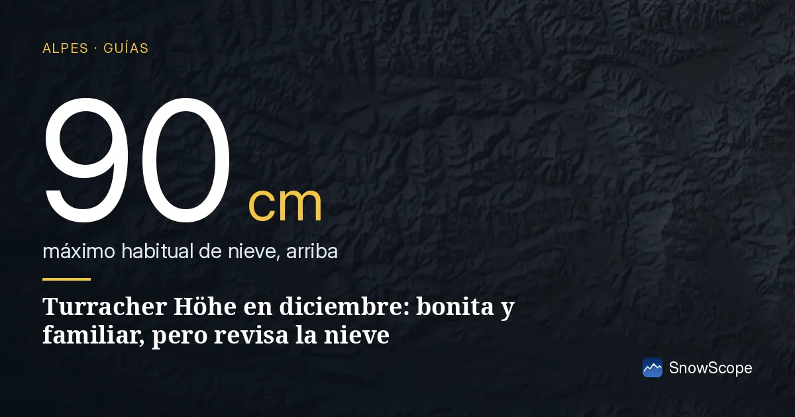

Turracher Höhe en diciembre: bonita y familiar, pero revisa la nieve
Primero la versión corta: un 15 de diciembre típico, la Turracher Höhe tiene 23 cm de nieve a media montaña (1792 m) en nuestros 46 inviernos de histórico, y solo el 39 % de los inviernos tenía allí 30 cm o más la semana del 15 al 21 de diciembre. Pueblo de puerto precioso, apuesta sincera en diciembre.
Consulta la previsión de nieve en tiempo real de Turracher Höhe en la app SnowScopeEspesor de nieve, alertas de nieve polvo y mapa 3D, gratis.
La pega
El pueblo y su lago están en un puerto, a la altura del remonte más bajo (1392 m), y ese es el problema en diciembre. En el remonte más bajo (1392 m) un 15 de diciembre típico tiene 10 cm, y la semana del 15 al 21 de diciembre solo el 4 % de nuestros inviernos tenía allí 30 cm. El primer día habitual con 30 cm a media montaña es el 22 de diciembre, casi en Navidad.
Y va a menos: en la semana de Navidad, el 67 % de los primeros 15 inviernos tenía 30 cm a media montaña, frente al 27 % de los últimos 15. El invierno pasado había 3 cm el 15 de diciembre.


Por qué la gente va igual
La estación es amable y está bien repartida: 34 km de pistas cartografiadas y 15 remontes entre 1392 m y 2193 m, con terreno suave para familias. Arriba va mejor que en medio: 34 cm un 15 de diciembre típico y 70 % de inviernos con 30 cm en Navidad.
En todo el invierno la imagen también es modesta: un invierno medio llega a 67 cm a media montaña, y el mes con más nieve suele ser febrero, no diciembre.
La nieve, fecha a fecha
Espesor típico a media montaña: 12 cm el 1 de diciembre, 23 cm el 15, 26 cm el 24 y 28 cm el 31. En un año bueno (1 de cada 10) hay 48 cm el 15 de diciembre; en uno flojo, 4 cm. Esa horquilla convierte una reserva en diciembre en una apuesta.
Precios
La tarifa oficial 2026-27 tiene una temporada baja desde la apertura hasta el 24 de diciembre. El día adulto cuesta 72,50 EUR en ambas temporadas; el forfait de 6 días, 353 EUR en temporada baja y 381 EUR en alta. Antes de Navidad se ahorra en la semana, no en el día.
Comparada con el Mölltaler Gletscher
Por un precio parecido se esquía en un glaciar en la misma región. El remonte más bajo del Mölltaler Gletscher está a 2103 m con 66 cm un 15 de diciembre típico, y el 91 % de nuestros inviernos tenía allí 30 cm la semana del 15 al 21 de diciembre. Su forfait de 6 días costaba 332 EUR en temporada baja en su última tarifa publicada (2025-26).
En diciembre el glaciar gana en nieve y en precio de la semana. La Turracher Höhe gana en ambiente y pistas familiares, y tiene más sentido a partir de enero.
Consejos para esquiadores
- Reserva flexible o espera a enero: la media montaña suele llegar a 30 cm solo hacia el 22 de diciembre.
- Si vas en diciembre, esquía los remontes altos: la cima tenía 30 cm en el 70 % de las semanas de Navidad.
- Compara el precio de 6 días: 353 EUR hasta el 24 de diciembre, 381 EUR después.
- Fuera de pista tras una nevada: lee el boletín de aludes de Carintia.
Más mapas (sitios externos)
Referencias y créditos
- Turracher Höhe: official lift-pass prices (2026-27), checked 13 November 2026 www.turracherhoehe.at/en/winter/tariffs
- Mölltaler Gletscher: official lift-pass prices (2025-26), checked 13 November 2026 www.moelltaler-gletscher.at/en/price-list/winter/moelltaler-gletscher
Sobre estas cifras
Cifras de nieve: histórico de nieve de SnowScope, 46 inviernos pasados (1980-81 a 2025-26) a las alturas de la estación, corregido por altitud (una estimación para una zona, no partes de la estación); «buena nieve» = 30 cm o más en el suelo de media en la semana. Mapa: nuestro espesor habitual el 15 de diciembre repartido sobre el relieve según la altura. Pistas y remontes: cartografía OpenSkiMap. Forfaits: tarifas oficiales de las estaciones, comprobadas el 13 de noviembre de 2026; los precios pueden cambiar.
Boletines oficiales de aludes: Lawinenwarndienst Steiermark
Citar este informe
Para investigación, docencia o prensa: cifras y gráficos reutilizables libremente bajo CC BY 4.0 con esta cita.
SnowScope (2026), Turracher Höhe en diciembre: bonita y familiar, pero revisa la nieve, https://snowscope.app/blog/es/2026/11/turracher-hoehe-december-skiing-honest-snow-check.html, consultado el 2026-11-14
SnowScope (Atlas Labs). (2026, November 14). Turracher Höhe en diciembre: bonita y familiar, pero revisa la nieve. SnowScope snow reports. https://snowscope.app/blog/es/2026/11/turracher-hoehe-december-skiing-honest-snow-check.html
BibTeX
@misc{snowscope2026turracherhoehedecembersk,
author = {{SnowScope (Atlas Labs)}},
title = {Turracher Höhe en diciembre: bonita y familiar, pero revisa la nieve},
year = {2026},
month = nov,
howpublished = {\url{https://snowscope.app/blog/es/2026/11/turracher-hoehe-december-skiing-honest-snow-check.html}},
note = {Published 2026-11-14 20:14 UTC; accessed 2026-11-14}
}· CC BY 4.0 · Métodos, datos y herramientas →
Turracher Höhe: nieve y temperatura según la altura, este invierno vs el pasado (herramientas) →
Sigue Turracher Höhe
Gratis: un aviso cuando llega la nieve y la previsión cada mañana.
Más partes de nieve

Cuándo reservar Courchevel y las 3 Vallées, qué pueblo elegir y dónde dura la nieve, a partir de 46 inviernos pasados.

Cortina d'Ampezzo de tres maneras: Tofana, Faloria-Cristallo y Cinque Torri-Lagazuoi, con 46 inviernos de datos de nieve a tres alturas.

Nuestra serie de 46 inviernos en los Alpes, 108 puntos de 667 a 3872 m: menos días de nieve en todos, claramente en el 81 %. Qué cambió y por qué.